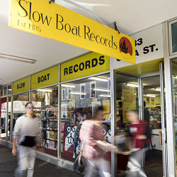

Radiohead
Radiohead are a popular english rcok band, formed in 1985. They have 9 studio albums, including OK Computer, In Rainbows, Kid A, and The Bends.

Coldplay
Coldplay are a popular english rock/pop band formed in 1997. They have 10 studio albums, including Parachutes, A Rush of Blood to the Head, and X&Y.

Queen
Queen is a very famous english rock band, formed in 1970. They have 15 studio albums, and have released many well known songs, such as Bohemian Rhapsody and We Will Rock You.

Beatles
Beatles are one of the biggest bands of all time. They were formed in Liverpool 1970, and have relased 13 stdio albums.
Formats of Music

CDs or Compact Discs first became mainstream in late 1980s to early 1990s. They provided more portability and were easier to use than vinyls. They are cheaper than vinyls, normally in the $20 to $30 range for a standard album.

Records, also known as vinyls, were the first format of music that was consistent and had a high fidelelty (quality). Vinyls quickly became popular around 1950's, and many people still collect and use records in 2026.

Digital music is the easiest way to listen to music. All you have to do is press a button, and your music plays instantly. Most people use streaming services to listen to music due to it's ease of use.

Slow boat records
Location: Cuba Mall, Wellington
Slow Boat Records is a very large music store on Cuba Street in Wellington City. They have an extensive range of mainly CDs, but still have a large collection of records for sale. This store is best for buying CDs for good value.
Flying nun records
Location: Cuba Mall, Wellington
Flying Nun Records is a smaller shop on Cuba Street in Wellington. However, they have hundreds of popular records for sale, unlike any other record shop in Wellington. They still have a decent CD collection, but it is much smaller than Slow Boat Records.